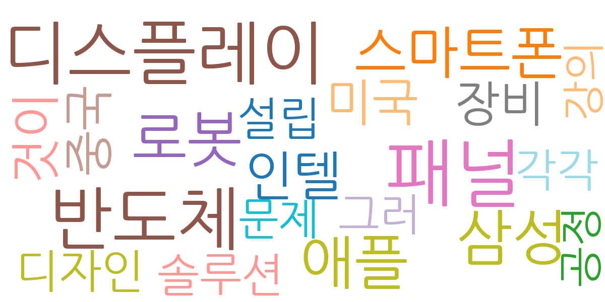

주요 5개 토픽이 도출되었고, 최근 3일 시계열을 기반으로 트렌드가 산출되었습니다.

| Rank | Keyword | Score |
|---|---|---|
| 1 | 패널 | 0.734 |
| 2 | 디스플레이 | 0.648 |
| 3 | 반도체 | 0.636 |
| 4 | 삼성 | 0.472 |
| 5 | 로봇 | 0.453 |
| 6 | 애플 | 0.439 |
| 7 | 스마트폰 | 0.412 |
| 8 | 인텔 | 0.350 |
| 9 | 것이 | 0.325 |
| 10 | 미국 | 0.322 |
| 11 | 중국 | 0.311 |
| 12 | 장비 | 0.305 |
| 13 | 디자인 | 0.274 |
| 14 | 솔루션 | 0.265 |
| 15 | 각각 | 0.259 |


주요 5개 토픽이 도출되었고, 최근 3일 시계열을 기반으로 트렌드가 산출되었습니다.
| Idea | Target | Value Prop | Score |
|---|---|---|---|
| 디스플레이 패널 재활용 플랫폼 구축 (KR) | 디스플레이 제조사, 전자제품 수리업체, 폐기물 처리업체 (대기업 및 중견기업) | 폐기 디스플레이 패널의 효율적인 재활용 및 자원 순환 시스템 구축. 투명하고 효율적인 거래 시스템 제공. ESG 경영 평가 지표 개선 및 관련 규제 준수 지원. 차별화 포인트: 블록체인 기반의 투명한 거래 시스템을 통해 신뢰도 향상. | 4.50 |
| 스마트 사이니지용 AI 기반 콘텐츠 제작 서비스 (JP) | 사이니지 제조사, 광고 대행사, 소매업체 (중소기업 및 대기업) | AI 기반 자동 콘텐츠 생성으로 제작 시간 및 비용 절감. 데이터 분석 기반의 최적화된 콘텐츠 제공. 다양한 사이니지 환경에 맞춤형 콘텐츠 제공. 차별화 포인트: 실시간 데이터 연동을 통한 동적 콘텐츠 제공. | 4.00 |
| 패널 | 기업(B2B) | 패널 도입으로 비용/품질/경험을 개선. | 3.00 |
| 디스플레이 | 기업(B2B) | 디스플레이 도입으로 비용/품질/경험을 개선. | 3.00 |
| 반도체 | 기업(B2B) | 반도체 도입으로 비용/품질/경험을 개선. | 3.00 |